Notice
This document is for a development version of Ceph.
Architecture
Ceph uniquely delivers object, block, and file storage in one unified system. Ceph is highly reliable, easy to manage, and free. Ceph delivers extraordinary scalability–thousands of clients accessing petabytes to exabytes of data. A Ceph Node leverages commodity hardware and intelligent daemons, and a Ceph Storage Cluster accommodates large numbers of nodes, which communicate with each other to replicate and redistribute data dynamically.
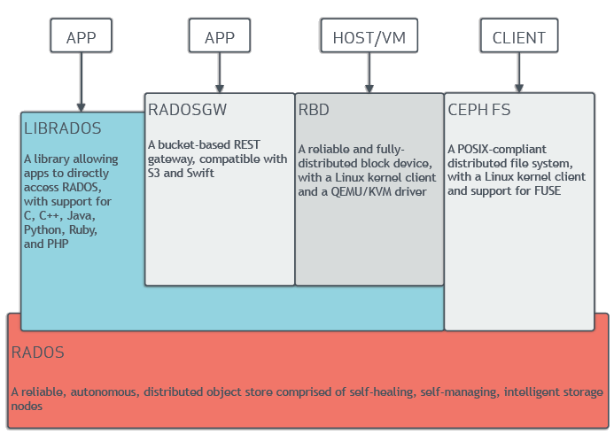
The Ceph Storage Cluster
Ceph provides an infinitely scalable Ceph Storage Cluster based upon RADOS, a reliable, distributed storage service that uses the intelligence in each of its nodes to secure the data it stores and to provide that data to clients. See Sage Weil’s “The RADOS Object Store” blog post for a brief explanation of RADOS and see RADOS - A Scalable, Reliable Storage Service for Petabyte-scale Storage Clusters for an exhaustive explanation of RADOS.
A Ceph Storage Cluster consists of multiple types of daemons:
Ceph Monitors maintain the master copy of the cluster map, which they provide to Ceph clients. The existence of multiple monitors in the Ceph cluster ensures availability if one of the monitor daemons or its host fails.
A Ceph OSD Daemon checks its own state and the state of other OSDs and reports back to monitors.
A Ceph Manager serves as an endpoint for monitoring, orchestration, and plug-in modules.
A Ceph Metadata Server (MDS) manages file metadata when CephFS is used to provide file services.
Storage cluster clients and Ceph OSD Daemons use the CRUSH algorithm
to compute information about the location of data. By using the CRUSH
algorithm, clients and OSDs avoid being bottlenecked by a central lookup table.
Ceph’s high-level features include a native interface to the Ceph Storage
Cluster via librados and a number of service interfaces built on top of
librados.
Storing Data
The Ceph Storage Cluster receives data from Ceph Clients--whether it
comes through a Ceph Block Device, Ceph Object Storage, the
Ceph File System, or a custom implementation that you create by using
librados. The data received by the Ceph Storage Cluster is stored as RADOS
objects. Each object is stored on an Object Storage Device (this is
also called an “OSD”). Ceph OSDs control read, write, and replication
operations on storage drives. The default BlueStore back end stores objects
in a monolithic, database-like fashion.
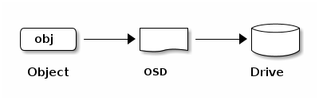
Ceph OSD Daemons store data as objects in a flat namespace. This means that objects are not stored in a hierarchy of directories. An object has an identifier, binary data, and metadata consisting of name/value pairs. Ceph Clients determine the semantics of the object data. For example, CephFS uses metadata to store file attributes such as the file owner, the created date, and the last modified date.
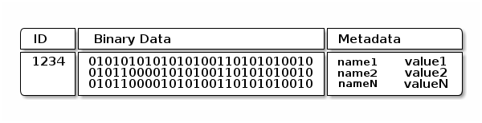
Note
An object ID is unique across the entire cluster, not just the local filesystem.
Scalability and High Availability
In traditional architectures, clients talk to a centralized component. This centralized component might be a gateway, a broker, an API, or a facade. A centralized component of this kind acts as a single point of entry to a complex subsystem. Architectures that rely upon such a centralized component have a single point of failure and incur limits to performance and scalability. If the centralized component goes down, the whole system becomes unavailable.
Ceph eliminates this centralized component. This enables clients to interact with Ceph OSDs directly. Ceph OSDs create object replicas on other Ceph Nodes to ensure data safety and high availability. Ceph also uses a cluster of monitors to ensure high availability. To eliminate centralization, Ceph uses an algorithm called CRUSH.
CRUSH Introduction
Ceph Clients and Ceph OSD Daemons both use the CRUSH algorithm to compute information about object location instead of relying upon a central lookup table. CRUSH provides a better data management mechanism than do older approaches, and CRUSH enables massive scale by distributing the work to all the OSD daemons in the cluster and all the clients that communicate with them. CRUSH uses intelligent data replication to ensure resiliency, which is better suited to hyper-scale storage. The following sections provide additional details on how CRUSH works. For an in-depth, academic discussion of CRUSH, see CRUSH - Controlled, Scalable, Decentralized Placement of Replicated Data.
Cluster Map
In order for a Ceph cluster to function properly, Ceph Clients and Ceph OSDs must have current information about the cluster’s topology. Current information is stored in the “Cluster Map”, which is in fact a collection of five maps. The five maps that constitute the cluster map are:
The Monitor Map: Contains the cluster
fsid, the position, the name, the address, and the TCP port of each monitor. The monitor map specifies the current epoch, the time of the monitor map’s creation, and the time of the monitor map’s last modification. To view a monitor map, runceph mon dump.The OSD Map: Contains the cluster
fsid, the time of the OSD map’s creation, the time of the OSD map’s last modification, a list of pools, a list of replica sizes, a list of PG numbers, and a list of OSDs and their statuses (for example,up,in). To view an OSD map, runceph osd dump.The PG Map: Contains the PG version, its time stamp, the last OSD map epoch, the full ratios, and the details of each placement group. This includes the PG ID, the Up Set, the Acting Set, the state of the PG (for example,
active + clean), and data usage statistics for each pool.The CRUSH Map: Contains a list of storage devices, the failure domain hierarchy (for example,
device,host,rack,row,room), and rules for traversing the hierarchy when storing data. To view a CRUSH map, runceph osd getcrushmap -o {filename}and then decompile it by runningcrushtool -d {comp-crushmap-filename} -o {decomp-crushmap-filename}. Use a text editor orcatto view the decompiled map.The MDS Map: Contains the current MDS map epoch, when the map was created, and the last time it changed. It also contains the pool for storing metadata, a list of metadata servers, and which metadata servers are
upandin. To view an MDS map, executeceph fs dump.
Each map maintains a history of changes to its operating state. Ceph Monitors maintain a master copy of the cluster map. This master copy includes the cluster members, the state of the cluster, changes to the cluster, and information recording the overall health of the Ceph Storage Cluster.
High Availability Monitors
A Ceph Client must contact a Ceph Monitor and obtain a current copy of the cluster map in order to read data from or to write data to the Ceph cluster.
It is possible for a Ceph cluster to function properly with only a single monitor, but a Ceph cluster that has only a single monitor has a single point of failure: if the monitor goes down, Ceph clients will be unable to read data from or write data to the cluster.
Ceph leverages a cluster of monitors in order to increase reliability and fault tolerance. When a cluster of monitors is used, however, one or more of the monitors in the cluster can fall behind due to latency or other faults. Ceph mitigates these negative effects by requiring multiple monitor instances to agree about the state of the cluster. To establish consensus among the monitors regarding the state of the cluster, Ceph uses the Paxos algorithm and a majority of monitors (for example, one in a cluster that contains only one monitor, two in a cluster that contains three monitors, three in a cluster that contains five monitors, four in a cluster that contains six monitors, and so on).
See the Monitor Config Reference for more detail on configuring monitors.
High Availability Authentication
The cephx authentication system is used by Ceph to authenticate users and
daemons and to protect against man-in-the-middle attacks.
Note
The cephx protocol does not address data encryption in transport
(for example, SSL/TLS) or encryption at rest.
cephx uses shared secret keys for authentication. This means that both the
client and the monitor cluster keep a copy of the client’s secret key.
The cephx protocol makes it possible for each party to prove to the other
that it has a copy of the key without revealing it. This provides mutual
authentication and allows the cluster to confirm (1) that the user has the
secret key and (2) that the user can be confident that the cluster has a copy
of the secret key.
As stated in Scalability and High Availability, Ceph does not have any centralized
interface between clients and the Ceph object store. By avoiding such a
centralized interface, Ceph avoids the bottlenecks that attend such centralized
interfaces. However, this means that clients must interact directly with OSDs.
Direct interactions between Ceph clients and OSDs require authenticated
connections. The cephx authentication system establishes and sustains these
authenticated connections.
The cephx protocol operates in a manner similar to Kerberos.
A user invokes a Ceph client to contact a monitor. Unlike Kerberos, each
monitor can authenticate users and distribute keys, which means that there is
no single point of failure and no bottleneck when using cephx. The monitor
returns an authentication data structure that is similar to a Kerberos ticket.
This authentication data structure contains a session key for use in obtaining
Ceph services. The session key is itself encrypted with the user’s permanent
secret key, which means that only the user can request services from the Ceph
Monitors. The client then uses the session key to request services from the
monitors, and the monitors provide the client with a ticket that authenticates
the client against the OSDs that actually handle data. Ceph Monitors and OSDs
share a secret, which means that the clients can use the ticket provided by the
monitors to authenticate against any OSD or metadata server in the cluster.
Like Kerberos tickets, cephx tickets expire. An attacker cannot use an
expired ticket or session key that has been obtained surreptitiously. This form
of authentication prevents attackers who have access to the communications
medium from creating bogus messages under another user’s identity and prevents
attackers from altering another user’s legitimate messages, as long as the
user’s secret key is not divulged before it expires.
An administrator must set up users before using cephx. In the following
diagram, the client.admin user invokes ceph auth get-or-create-key from
the command line to generate a username and secret key. Ceph’s auth
subsystem generates the username and key, stores a copy on the monitor(s), and
transmits the user’s secret back to the client.admin user. This means that
the client and the monitor share a secret key.
Note
The client.admin user must provide the user ID and
secret key to the user in a secure manner.
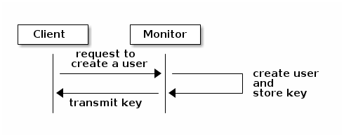
Here is how a client authenticates with a monitor. The client passes the user
name to the monitor. The monitor generates a session key that is encrypted with
the secret key associated with the username. The monitor transmits the
encrypted ticket to the client. The client uses the shared secret key to
decrypt the payload. The session key identifies the user, and this act of
identification will last for the duration of the session. The client requests
a ticket for the user, and the ticket is signed with the session key. The
monitor generates a ticket and uses the user’s secret key to encrypt it. The
encrypted ticket is transmitted to the client. The client decrypts the ticket
and uses it to sign requests to OSDs and to metadata servers in the cluster.
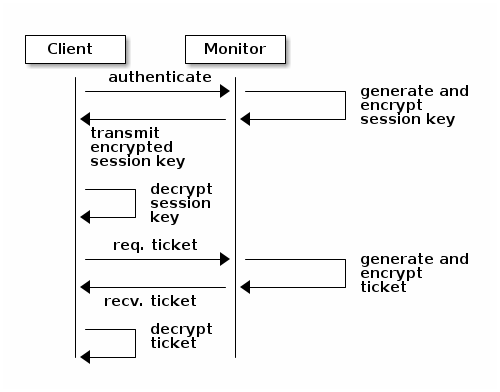
The cephx protocol authenticates ongoing communications between the clients
and Ceph daemons. After initial authentication, each message sent between a
client and a daemon is signed using a ticket that can be verified by monitors,
OSDs, and metadata daemons. This ticket is verified by using the secret shared
between the client and the daemon.
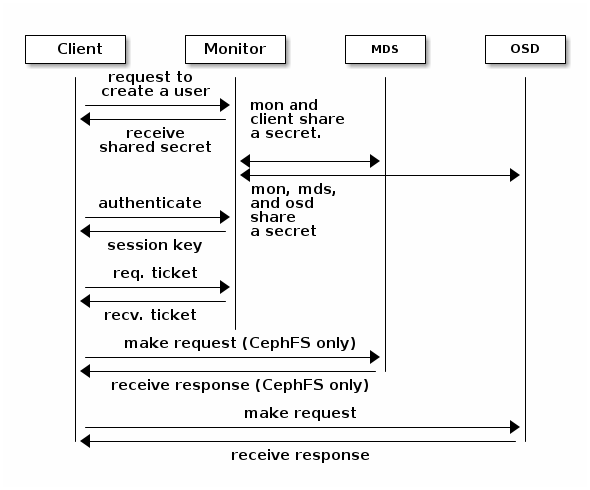
This authentication protects only the connections between Ceph clients and Ceph daemons. The authentication is not extended beyond the Ceph client. If a user accesses the Ceph client from a remote host, cephx authentication will not be applied to the connection between the user’s host and the client host.
See CephX Config Reference for more on configuration details.
See User Management for more on user management.
See A Detailed Description of the Cephx Authentication Protocol for more on the distinction between authorization and
authentication and for a step-by-step explanation of the setup of cephx
tickets and session keys.
Smart Daemons Enable Hyperscale
A feature of many storage clusters is a centralized interface that keeps track of the nodes that clients are permitted to access. Such centralized architectures provide services to clients by means of a double dispatch. At the petabyte-to-exabyte scale, such double dispatches are a significant bottleneck.
Ceph obviates this bottleneck: Ceph’s OSD Daemons AND Ceph clients are cluster-aware. Like Ceph clients, each Ceph OSD Daemon is aware of other Ceph OSD Daemons in the cluster. This enables Ceph OSD Daemons to interact directly with other Ceph OSD Daemons and to interact directly with Ceph Monitors. Being cluster-aware makes it possible for Ceph clients to interact directly with Ceph OSD Daemons.
Because Ceph clients, Ceph monitors, and Ceph OSD daemons interact with one another directly, Ceph OSD daemons can make use of the aggregate CPU and RAM resources of the nodes in the Ceph cluster. This means that a Ceph cluster can easily perform tasks that a cluster with a centralized interface would struggle to perform. The ability of Ceph nodes to make use of the computing power of the greater cluster provides several benefits:
OSDs Service Clients Directly: Network devices can support only a limited number of concurrent connections. Because Ceph clients contact Ceph OSD daemons directly without first connecting to a central interface, Ceph enjoys improved perfomance and increased system capacity relative to storage redundancy strategies that include a central interface. Ceph clients maintain sessions only when needed, and maintain those sessions with only particular Ceph OSD daemons, not with a centralized interface.
OSD Membership and Status: When Ceph OSD Daemons join a cluster, they report their status. At the lowest level, the Ceph OSD Daemon status is
upordown: this reflects whether the Ceph OSD daemon is running and able to service Ceph Client requests. If a Ceph OSD Daemon isdownandinthe Ceph Storage Cluster, this status may indicate the failure of the Ceph OSD Daemon. If a Ceph OSD Daemon is not running because it has crashed, the Ceph OSD Daemon cannot notify the Ceph Monitor that it isdown. The OSDs periodically send messages to the Ceph Monitor (in releases prior to Luminous, this was done by means ofMPGStats, and beginning with the Luminous release, this has been done withMOSDBeacon). If the Ceph Monitors receive no such message after a configurable period of time, then they mark the OSDdown. This mechanism is a failsafe, however. Normally, Ceph OSD Daemons determine if a neighboring OSD isdownand report it to the Ceph Monitors. This contributes to making Ceph Monitors lightweight processes. See Monitoring OSDs and Heartbeats for additional details.Data Scrubbing: To maintain data consistency, Ceph OSD Daemons scrub RADOS objects. Ceph OSD Daemons compare the metadata of their own local objects against the metadata of the replicas of those objects, which are stored on other OSDs. Scrubbing occurs on a per-Placement-Group basis, finds mismatches in object size and finds metadata mismatches, and is usually performed daily. Ceph OSD Daemons perform deeper scrubbing by comparing the data in objects, bit-for-bit, against their checksums. Deep scrubbing finds bad sectors on drives that are not detectable with light scrubs. See Data Scrubbing for details on configuring scrubbing.
Replication: Data replication involves collaboration between Ceph Clients and Ceph OSD Daemons. Ceph OSD Daemons use the CRUSH algorithm to determine the storage location of object replicas. Ceph clients use the CRUSH algorithm to determine the storage location of an object, then the object is mapped to a pool and to a placement group, and then the client consults the CRUSH map to identify the placement group’s primary OSD.
After identifying the target placement group, the client writes the object to the identified placement group’s primary OSD. The primary OSD then consults its own copy of the CRUSH map to identify secondary OSDS, replicates the object to the placement groups in those secondary OSDs, confirms that the object was stored successfully in the secondary OSDs, and reports to the client that the object was stored successfully. We call these replication operations
subops.
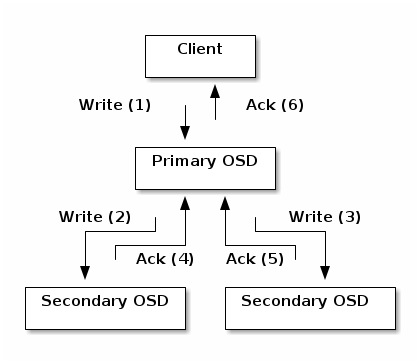
By performing this data replication, Ceph OSD Daemons relieve Ceph clients and their network interfaces of the burden of replicating data.
Dynamic Cluster Management
In the Scalability and High Availability section, we explained how Ceph uses CRUSH, cluster topology, and intelligent daemons to scale and maintain high availability. Key to Ceph’s design is the autonomous, self-healing, and intelligent Ceph OSD Daemon. Let’s take a deeper look at how CRUSH works to enable modern cloud storage infrastructures to place data, rebalance the cluster, and adaptively place and balance data and recover from faults.
About Pools
The Ceph storage system supports the notion of ‘Pools’, which are logical partitions for storing objects.
Ceph Clients retrieve a Cluster Map from a Ceph Monitor, and write RADOS
objects to pools. The way that Ceph places the data in the pools is determined
by the pool’s size or number of replicas, the CRUSH rule, and the number of
placement groups in the pool.
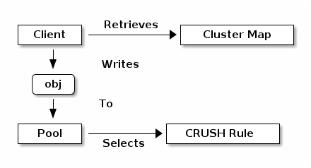
Pools set at least the following parameters:
Ownership/Access to Objects
The Number of Placement Groups, and
The CRUSH Rule to Use.
See Setting Pool Values for details.
Mapping PGs to OSDs
Each pool has a number of placement groups (PGs) within it. CRUSH dynamically maps PGs to OSDs. When a Ceph Client stores objects, CRUSH maps each RADOS object to a PG.
This mapping of RADOS objects to PGs implements an abstraction and indirection layer between Ceph OSD Daemons and Ceph Clients. The Ceph Storage Cluster must be able to grow (or shrink) and redistribute data adaptively when the internal topology changes.
If the Ceph Client “knew” which Ceph OSD Daemons were storing which objects, a tight coupling would exist between the Ceph Client and the Ceph OSD Daemon. But Ceph avoids any such tight coupling. Instead, the CRUSH algorithm maps each RADOS object to a placement group and then maps each placement group to one or more Ceph OSD Daemons. This “layer of indirection” allows Ceph to rebalance dynamically when new Ceph OSD Daemons and their underlying OSD devices come online. The following diagram shows how the CRUSH algorithm maps objects to placement groups, and how it maps placement groups to OSDs.
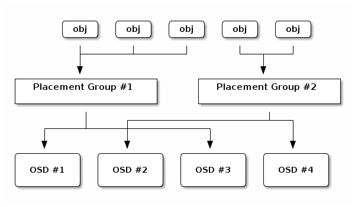
The client uses its copy of the cluster map and the CRUSH algorithm to compute precisely which OSD it will use when reading or writing a particular object.
Calculating PG IDs
When a Ceph Client binds to a Ceph Monitor, it retrieves the latest version of the Cluster Map. When a client has been equipped with a copy of the cluster map, it is aware of all the monitors, OSDs, and metadata servers in the cluster. However, even equipped with a copy of the latest version of the cluster map, the client doesn’t know anything about object locations.
Object locations must be computed.
The client requires only the object ID and the name of the pool in order to compute the object location.
Ceph stores data in named pools (for example, “liverpool”). When a client stores a named object (for example, “john”, “paul”, “george”, or “ringo”) it calculates a placement group by using the object name, a hash code, the number of PGs in the pool, and the pool name. Ceph clients use the following steps to compute PG IDs.
The client inputs the pool name and the object ID. (for example: pool = “liverpool” and object-id = “john”)
Ceph hashes the object ID.
Ceph calculates the hash, modulo the number of PGs (for example:
58), to get a PG ID.Ceph uses the pool name to retrieve the pool ID: (for example: “liverpool” =
4)Ceph prepends the pool ID to the PG ID (for example:
4.58).
It is much faster to compute object locations than to perform object location query over a chatty session. The CRUSH algorithm allows a client to compute where objects are expected to be stored, and enables the client to contact the primary OSD to store or retrieve the objects.
Peering and Sets
In previous sections, we noted that Ceph OSD Daemons check each other’s heartbeats and report back to Ceph Monitors. Ceph OSD daemons also ‘peer’, which is the process of bringing all of the OSDs that store a Placement Group (PG) into agreement about the state of all of the RADOS objects (and their metadata) in that PG. Ceph OSD Daemons Report Peering Failure to the Ceph Monitors. Peering issues usually resolve themselves; however, if the problem persists, you may need to refer to the Troubleshooting Peering Failure section.
Note
PGs that agree on the state of the cluster do not necessarily have the current data yet.
The Ceph Storage Cluster was designed to store at least two copies of an object
(that is, size = 2), which is the minimum requirement for data safety. For
high availability, a Ceph Storage Cluster should store more than two copies of
an object (that is, size = 3 and min size = 2) so that it can continue
to run in a degraded state while maintaining data safety.
Warning
Although we say here that R2 (replication with two copies) is the minimum requirement for data safety, R3 (replication with three copies) is recommended. On a long enough timeline, data stored with an R2 strategy will be lost.
As explained in the diagram in Smart Daemons Enable Hyperscale, we do not
name the Ceph OSD Daemons specifically (for example, osd.0, osd.1,
etc.), but rather refer to them as Primary, Secondary, and so forth. By
convention, the Primary is the first OSD in the Acting Set, and is
responsible for orchestrating the peering process for each placement group
where it acts as the Primary. The Primary is the ONLY OSD in a given
placement group that accepts client-initiated writes to objects.
The set of OSDs that is responsible for a placement group is called the Acting Set. The term “Acting Set” can refer either to the Ceph OSD Daemons that are currently responsible for the placement group, or to the Ceph OSD Daemons that were responsible for a particular placement group as of some epoch.
The Ceph OSD daemons that are part of an Acting Set might not always be
up. When an OSD in the Acting Set is up, it is part of the Up Set.
The Up Set is an important distinction, because Ceph can remap PGs to other
Ceph OSD Daemons when an OSD fails.
Note
Consider a hypothetical Acting Set for a PG that contains
osd.25, osd.32 and osd.61. The first OSD (osd.25), is the
Primary. If that OSD fails, the Secondary (osd.32), becomes the
Primary, and osd.25 is removed from the Up Set.
Rebalancing
When you add a Ceph OSD Daemon to a Ceph Storage Cluster, the cluster map gets updated with the new OSD. Referring back to Calculating PG IDs, this changes the cluster map. Consequently, it changes object placement, because it changes an input for the calculations. The following diagram depicts the rebalancing process (albeit rather crudely, since it is substantially less impactful with large clusters) where some, but not all of the PGs migrate from existing OSDs (OSD 1, and OSD 2) to the new OSD (OSD 3). Even when rebalancing, CRUSH is stable. Many of the placement groups remain in their original configuration, and each OSD gets some added capacity, so there are no load spikes on the new OSD after rebalancing is complete.
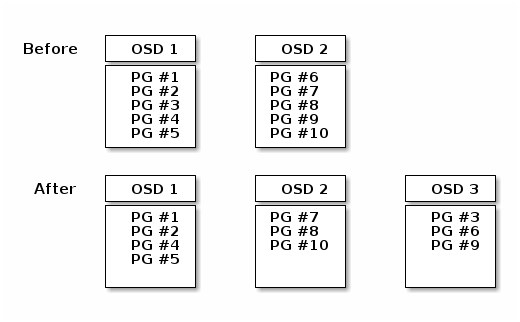
Data Consistency
As part of maintaining data consistency and cleanliness, Ceph OSDs also scrub objects within placement groups. That is, Ceph OSDs compare object metadata in one placement group with its replicas in placement groups stored in other OSDs. Scrubbing (usually performed daily) catches OSD bugs or filesystem errors, often as a result of hardware issues. OSDs also perform deeper scrubbing by comparing data in objects bit-for-bit. Deep scrubbing (by default performed weekly) finds bad blocks on a drive that weren’t apparent in a light scrub.
See Data Scrubbing for details on configuring scrubbing.
Erasure Coding
An erasure coded pool stores each object as K+M chunks. It is divided into
K data chunks and M coding chunks. The pool is configured to have a size
of K+M so that each chunk is stored in an OSD in the acting set. The rank of
the chunk is stored as an attribute of the object.
For instance an erasure coded pool can be created to use five OSDs (K+M = 5) and
sustain the loss of two of them (M = 2). Data may be unavailable until (K+1)
shards are restored.
Reading and Writing Encoded Chunks
When the object NYAN containing ABCDEFGHI is written to the pool, the erasure
encoding function splits the content into three data chunks simply by dividing
the content in three: the first contains ABC, the second DEF and the
last GHI. The content will be padded if the content length is not a multiple
of K. The function also creates two coding chunks: the fourth with YXY
and the fifth with QGC. Each chunk is stored in an OSD in the acting set.
The chunks are stored in objects that have the same name (NYAN) but reside
on different OSDs. The order in which the chunks were created must be preserved
and is stored as an attribute of the object (shard_t), in addition to its
name. Chunk 1 contains ABC and is stored on OSD5 while chunk 4 contains
YXY and is stored on OSD3.
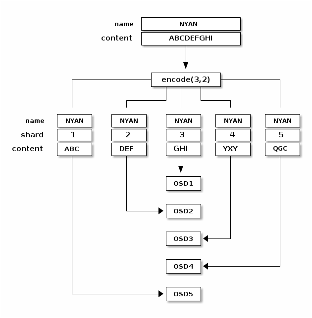
When the object NYAN is read from the erasure coded pool, the decoding
function reads three chunks: chunk 1 containing ABC, chunk 3 containing
GHI and chunk 4 containing YXY. Then, it rebuilds the original content
of the object ABCDEFGHI. The decoding function is informed that the chunks 2
and 5 are missing (they are called ‘erasures’). The chunk 5 could not be read
because the OSD4 is out. The decoding function can be called as soon as
three chunks are read: OSD2 was the slowest and its chunk was not taken into
account.
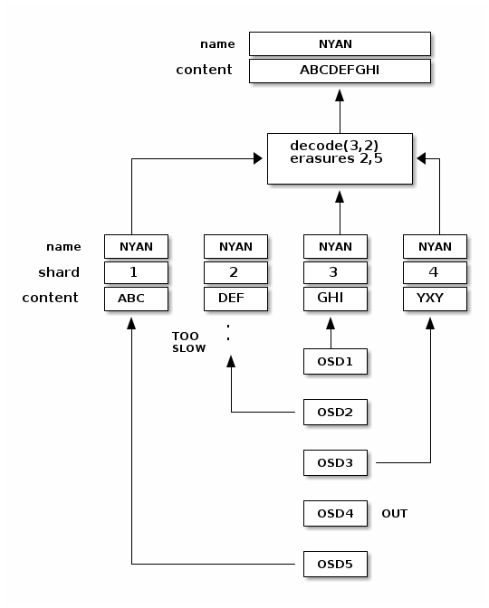
Interrupted Full Writes
In an erasure coded pool, the primary OSD in the up set receives all write
operations. It is responsible for encoding the payload into K+M chunks and
sends them to the other OSDs. It is also responsible for maintaining an
authoritative version of the placement group logs.
In the following diagram, an erasure coded placement group has been created with
K = 2, M = 1 and is supported by three OSDs, two for K and one for
M. The acting set of the placement group is made of OSD 1, OSD 2 and
OSD 3. An object has been encoded and stored in the OSDs : the chunk
D1v1 (i.e. Data chunk number 1, version 1) is on OSD 1, D2v1 on
OSD 2 and C1v1 (i.e. Coding chunk number 1, version 1) on OSD 3. The
placement group logs on each OSD are identical (i.e. 1,1 for epoch 1,
version 1).
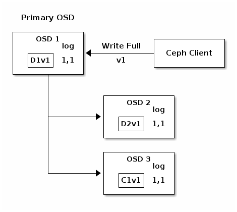
OSD 1 is the primary and receives a WRITE FULL from a client, which
means the payload is to replace the object entirely instead of overwriting a
portion of it. Version 2 (v2) of the object is created to override version 1
(v1). OSD 1 encodes the payload into three chunks: D1v2 (i.e. Data
chunk number 1 version 2) will be on OSD 1, D2v2 on OSD 2 and
C1v2 (i.e. Coding chunk number 1 version 2) on OSD 3. Each chunk is sent
to the target OSD, including the primary OSD which is responsible for storing
chunks in addition to handling write operations and maintaining an authoritative
version of the placement group logs. When an OSD receives the message
instructing it to write the chunk, it also creates a new entry in the placement
group logs to reflect the change. For instance, as soon as OSD 3 stores
C1v2, it adds the entry 1,2 ( i.e. epoch 1, version 2 ) to its logs.
Because the OSDs work asynchronously, some chunks may still be in flight ( such
as D2v2 ) while others are acknowledged and persisted to storage drives
(such as C1v1 and D1v1).
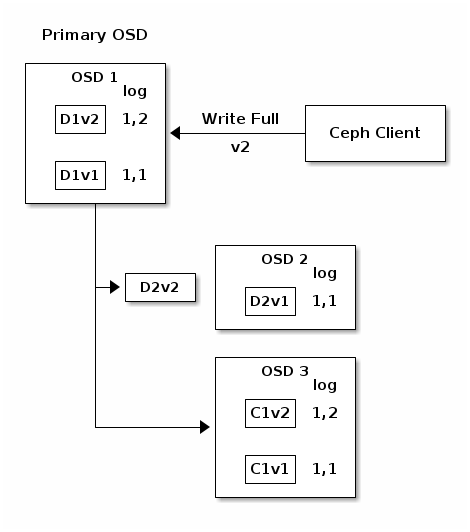
If all goes well, the chunks are acknowledged on each OSD in the acting set and
the logs’ last_complete pointer can move from 1,1 to 1,2.
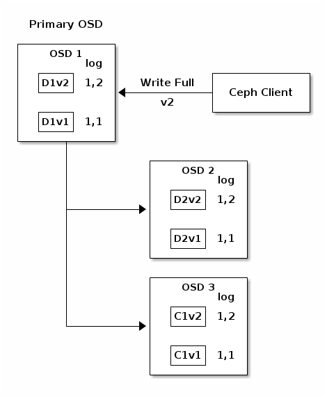
Finally, the files used to store the chunks of the previous version of the
object can be removed: D1v1 on OSD 1, D2v1 on OSD 2 and C1v1
on OSD 3.
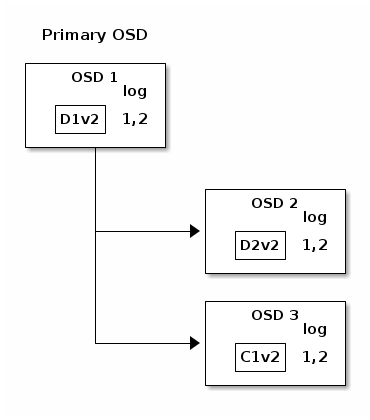
But accidents happen. If OSD 1 goes down while D2v2 is still in flight,
the object’s version 2 is partially written: OSD 3 has one chunk but that is
not enough to recover. It lost two chunks: D1v2 and D2v2 and the
erasure coding parameters K = 2, M = 1 require that at least two chunks are
available to rebuild the third. OSD 4 becomes the new primary and finds that
the last_complete log entry (i.e., all objects before this entry were known
to be available on all OSDs in the previous acting set ) is 1,1 and that
will be the head of the new authoritative log.
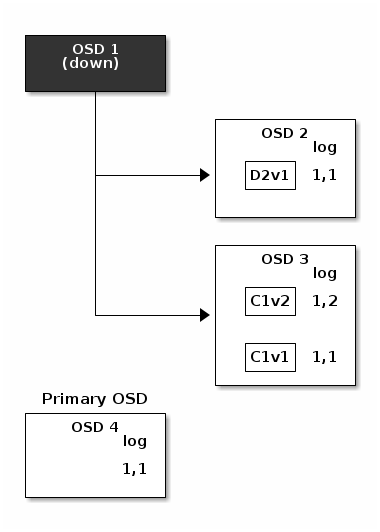
The log entry 1,2 found on OSD 3 is divergent from the new authoritative log
provided by OSD 4: it is discarded and the file containing the C1v2
chunk is removed. The D1v1 chunk is rebuilt with the decode function of
the erasure coding library during scrubbing and stored on the new primary
OSD 4.
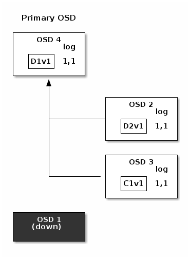
See Erasure Code Notes for additional details.
Cache Tiering
Note
Cache tiering is deprecated in Reef.
A cache tier provides Ceph Clients with better I/O performance for a subset of the data stored in a backing storage tier. Cache tiering involves creating a pool of relatively fast/expensive storage devices (e.g., solid state drives) configured to act as a cache tier, and a backing pool of either erasure-coded or relatively slower/cheaper devices configured to act as an economical storage tier. The Ceph objecter handles where to place the objects and the tiering agent determines when to flush objects from the cache to the backing storage tier. So the cache tier and the backing storage tier are completely transparent to Ceph clients.
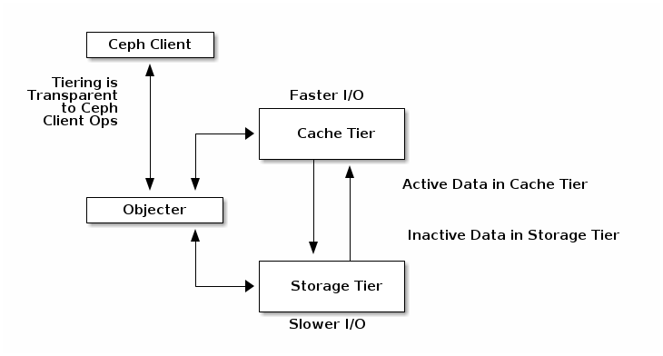
See Cache Tiering for additional details. Note that Cache Tiers can be tricky and their use is now discouraged.
Extending Ceph
You can extend Ceph by creating shared object classes called ‘Ceph Classes’.
Ceph loads .so classes stored in the osd class dir directory dynamically
(i.e., $libdir/rados-classes by default). When you implement a class, you
can create new object methods that have the ability to call the native methods
in the Ceph Object Store, or other class methods you incorporate via libraries
or create yourself.
On writes, Ceph Classes can call native or class methods, perform any series of operations on the inbound data and generate a resulting write transaction that Ceph will apply atomically.
On reads, Ceph Classes can call native or class methods, perform any series of operations on the outbound data and return the data to the client.
See src/objclass/objclass.h, src/fooclass.cc and src/barclass for
exemplary implementations.
Summary
Ceph Storage Clusters are dynamic--like a living organism. Although many storage appliances do not fully utilize the CPU and RAM of a typical commodity server, Ceph does. From heartbeats, to peering, to rebalancing the cluster or recovering from faults, Ceph offloads work from clients (and from a centralized gateway which doesn’t exist in the Ceph architecture) and uses the computing power of the OSDs to perform the work. When referring to Hardware Recommendations and the Network Config Reference, be cognizant of the foregoing concepts to understand how Ceph utilizes computing resources.
Ceph Protocol
Ceph Clients use the native protocol for interacting with the Ceph Storage
Cluster. Ceph packages this functionality into the librados library so that
you can create your own custom Ceph Clients. The following diagram depicts the
basic architecture.
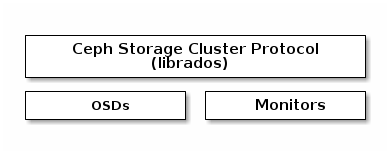
Native Protocol and librados
Modern applications need a simple object storage interface with asynchronous communication capability. The Ceph Storage Cluster provides a simple object storage interface with asynchronous communication capability. The interface provides direct, parallel access to objects throughout the cluster.
Pool Operations
Snapshots and Copy-on-write Cloning
Read/Write Objects - Create or Remove - Entire Object or Byte Range - Append or Truncate
Create/Set/Get/Remove XATTRs
Create/Set/Get/Remove Key/Value Pairs
Compound operations and dual-ack semantics
Object Classes
Object Watch/Notify
A client can register a persistent interest with an object and keep a session to the primary OSD open. The client can send a notification message and a payload to all watchers and receive notification when the watchers receive the notification. This enables a client to use any object as a synchronization/communication channel.
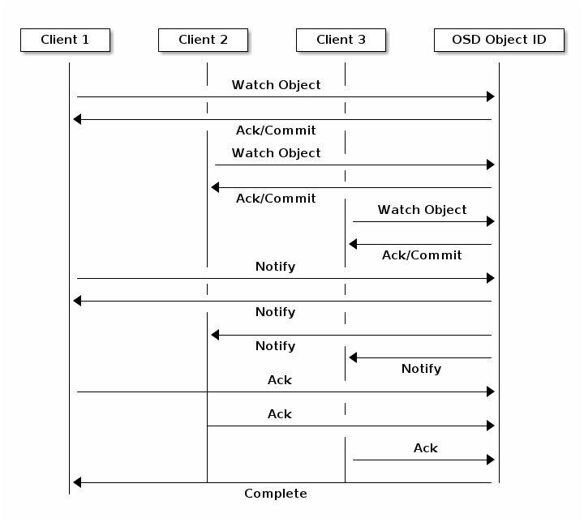
Data Striping
Storage devices have throughput limitations, which impact performance and scalability. So storage systems often support striping--storing sequential pieces of information across multiple storage devices--to increase throughput and performance. The most common form of data striping comes from RAID. The RAID type most similar to Ceph’s striping is RAID 0, or a ‘striped volume’. Ceph’s striping offers the throughput of RAID 0 striping, the reliability of n-way RAID mirroring and faster recovery.
Ceph provides three types of clients: Ceph Block Device, Ceph File System, and Ceph Object Storage. A Ceph Client converts its data from the representation format it provides to its users (a block device image, RESTful objects, CephFS filesystem directories) into objects for storage in the Ceph Storage Cluster.
Tip
The objects Ceph stores in the Ceph Storage Cluster are not striped.
Ceph Object Storage, Ceph Block Device, and the Ceph File System stripe their
data over multiple Ceph Storage Cluster objects. Ceph Clients that write
directly to the Ceph Storage Cluster via librados must perform the
striping (and parallel I/O) for themselves to obtain these benefits.
The simplest Ceph striping format involves a stripe count of 1 object. Ceph Clients write stripe units to a Ceph Storage Cluster object until the object is at its maximum capacity, and then create another object for additional stripes of data. The simplest form of striping may be sufficient for small block device images, S3 or Swift objects and CephFS files. However, this simple form doesn’t take maximum advantage of Ceph’s ability to distribute data across placement groups, and consequently doesn’t improve performance very much. The following diagram depicts the simplest form of striping:
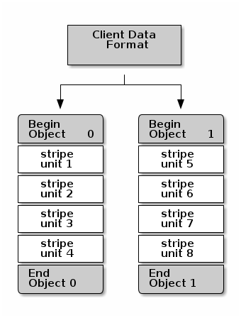
If you anticipate large images sizes, large S3 or Swift objects (e.g., video), or large CephFS directories, you may see considerable read/write performance improvements by striping client data over multiple objects within an object set. Significant write performance occurs when the client writes the stripe units to their corresponding objects in parallel. Since objects get mapped to different placement groups and further mapped to different OSDs, each write occurs in parallel at the maximum write speed. A write to a single drive would be limited by the head movement (e.g. 6ms per seek) and bandwidth of that one device (e.g. 100MB/s). By spreading that write over multiple objects (which map to different placement groups and OSDs) Ceph can reduce the number of seeks per drive and combine the throughput of multiple drives to achieve much faster write (or read) speeds.
Note
Striping is independent of object replicas. Since CRUSH replicates objects across OSDs, stripes get replicated automatically.
In the following diagram, client data gets striped across an object set
(object set 1 in the following diagram) consisting of 4 objects, where the
first stripe unit is stripe unit 0 in object 0, and the fourth stripe
unit is stripe unit 3 in object 3. After writing the fourth stripe, the
client determines if the object set is full. If the object set is not full, the
client begins writing a stripe to the first object again (object 0 in the
following diagram). If the object set is full, the client creates a new object
set (object set 2 in the following diagram), and begins writing to the first
stripe (stripe unit 16) in the first object in the new object set (object
4 in the diagram below).
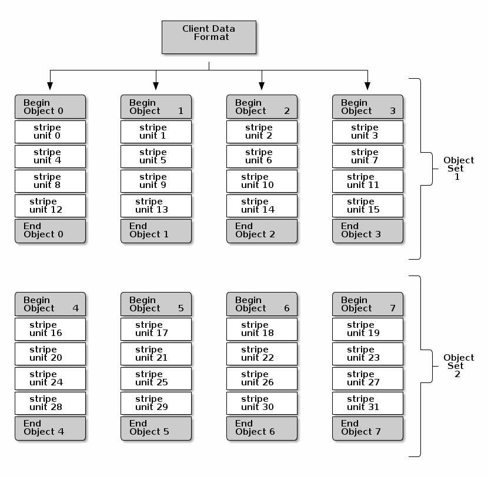
Three important variables determine how Ceph stripes data:
Object Size: Objects in the Ceph Storage Cluster have a maximum configurable size (e.g., 2MB, 4MB, etc.). The object size should be large enough to accommodate many stripe units, and should be a multiple of the stripe unit.
Stripe Width: Stripes have a configurable unit size (e.g., 64kb). The Ceph Client divides the data it will write to objects into equally sized stripe units, except for the last stripe unit. A stripe width, should be a fraction of the Object Size so that an object may contain many stripe units.
Stripe Count: The Ceph Client writes a sequence of stripe units over a series of objects determined by the stripe count. The series of objects is called an object set. After the Ceph Client writes to the last object in the object set, it returns to the first object in the object set.
Important
Test the performance of your striping configuration before putting your cluster into production. You CANNOT change these striping parameters after you stripe the data and write it to objects.
Once the Ceph Client has striped data to stripe units and mapped the stripe units to objects, Ceph’s CRUSH algorithm maps the objects to placement groups, and the placement groups to Ceph OSD Daemons before the objects are stored as files on a storage drive.
Note
Since a client writes to a single pool, all data striped into objects get mapped to placement groups in the same pool. So they use the same CRUSH map and the same access controls.
Ceph Clients
Ceph Clients include a number of service interfaces. These include:
Block Devices: The Ceph Block Device (a.k.a., RBD) service provides resizable, thin-provisioned block devices that can be snapshotted and cloned. Ceph stripes a block device across the cluster for high performance. Ceph supports both kernel objects (KO) and a QEMU hypervisor that uses
librbddirectly--avoiding the kernel object overhead for virtualized systems.Object Storage: The Ceph Object Storage (a.k.a., RGW) service provides RESTful APIs with interfaces that are compatible with Amazon S3 and OpenStack Swift.
Filesystem: The Ceph File System (CephFS) service provides a POSIX compliant filesystem usable with
mountor as a filesystem in user space (FUSE).
Ceph can run additional instances of OSDs, MDSs, and monitors for scalability and high availability. The following diagram depicts the high-level architecture.
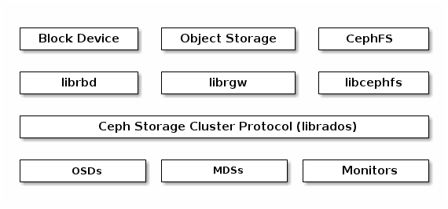
Ceph Object Storage
The Ceph Object Storage daemon, radosgw, is a FastCGI service that provides
a RESTful HTTP API to store objects and metadata. It layers on top of the Ceph
Storage Cluster with its own data formats, and maintains its own user database,
authentication, and access control. The RADOS Gateway uses a unified namespace,
which means you can use either the OpenStack Swift-compatible API or the Amazon
S3-compatible API. For example, you can write data using the S3-compatible API
with one application and then read data using the Swift-compatible API with
another application.
See Ceph Object Gateway for details.
Ceph Block Device
A Ceph Block Device stripes a block device image over multiple objects in the
Ceph Storage Cluster, where each object gets mapped to a placement group and
distributed, and the placement groups are spread across separate ceph-osd
daemons throughout the cluster.
Important
Striping allows RBD block devices to perform better than a single server could!
Thin-provisioned snapshottable Ceph Block Devices are an attractive option for
virtualization and cloud computing. In virtual machine scenarios, people
typically deploy a Ceph Block Device with the rbd network storage driver in
QEMU/KVM, where the host machine uses librbd to provide a block device
service to the guest. Many cloud computing stacks use libvirt to integrate
with hypervisors. You can use thin-provisioned Ceph Block Devices with QEMU and
libvirt to support OpenStack, OpenNebula and CloudStack
among other solutions.
While we do not provide librbd support with other hypervisors at this time,
you may also use Ceph Block Device kernel objects to provide a block device to a
client. Other virtualization technologies such as Xen can access the Ceph Block
Device kernel object(s). This is done with the command-line tool rbd.
Ceph File System
The Ceph File System (CephFS) provides a POSIX-compliant filesystem as a service that is layered on top of the object-based Ceph Storage Cluster. CephFS files get mapped to objects that Ceph stores in the Ceph Storage Cluster. Ceph Clients mount a CephFS filesystem as a kernel object or as a Filesystem in User Space (FUSE).
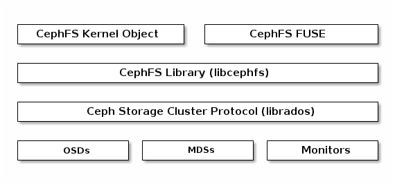
The Ceph File System service includes the Ceph Metadata Server (MDS) deployed
with the Ceph Storage cluster. The purpose of the MDS is to store all the
filesystem metadata (directories, file ownership, access modes, etc) in
high-availability Ceph Metadata Servers where the metadata resides in memory.
The reason for the MDS (a daemon called ceph-mds) is that simple filesystem
operations like listing a directory or changing a directory (ls, cd)
would tax the Ceph OSD Daemons unnecessarily. So separating the metadata from
the data means that the Ceph File System can provide high performance services
without taxing the Ceph Storage Cluster.
CephFS separates the metadata from the data, storing the metadata in the MDS,
and storing the file data in one or more objects in the Ceph Storage Cluster.
The Ceph filesystem aims for POSIX compatibility. ceph-mds can run as a
single process, or it can be distributed out to multiple physical machines,
either for high availability or for scalability.
High Availability: The extra
ceph-mdsinstances can be standby, ready to take over the duties of any failedceph-mdsthat was active. This is easy because all the data, including the journal, is stored on RADOS. The transition is triggered automatically byceph-mon.Scalability: Multiple
ceph-mdsinstances can be active, and they will split the directory tree into subtrees (and shards of a single busy directory), effectively balancing the load amongst all active servers.
Combinations of standby and active etc are possible, for example
running 3 active ceph-mds instances for scaling, and one standby
instance for high availability.
Brought to you by the Ceph Foundation
The Ceph Documentation is a community resource funded and hosted by the non-profit Ceph Foundation. If you would like to support this and our other efforts, please consider joining now.